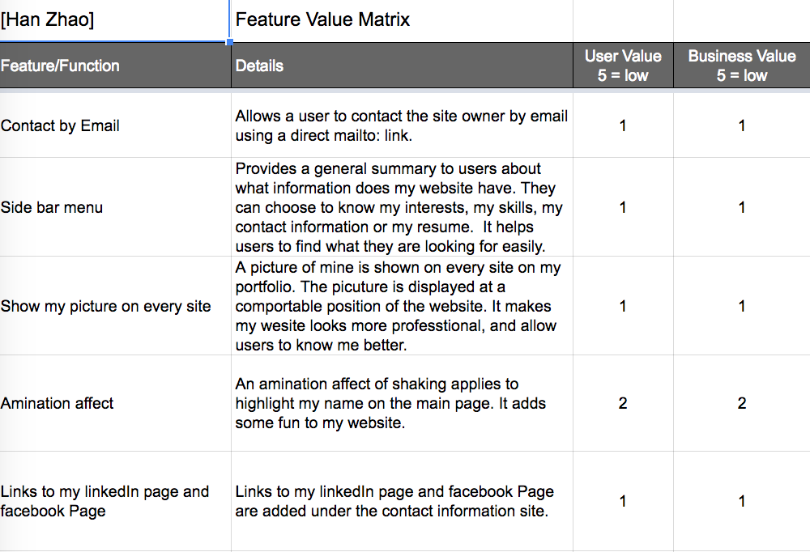
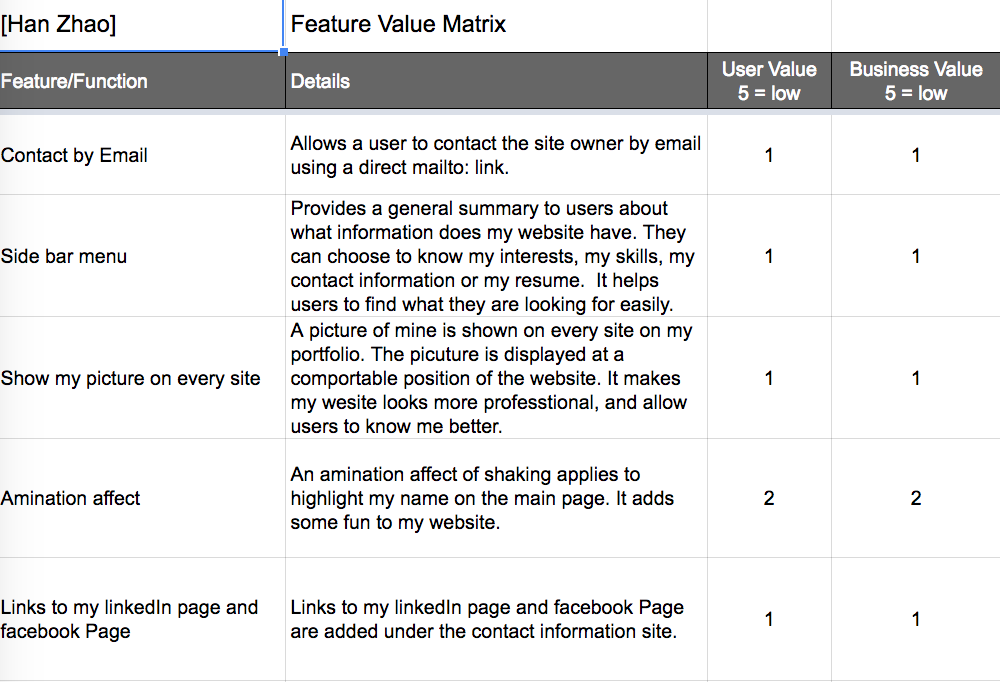

User Research
Competitor Analysis: Conducting competitor analysis allows me to compare my website with other websites which have the similar purposes or targets. It helps me see my strength and weakness that can be improved in the future. By looking at others' websites, I also get better senses in terms of website designs. It also helps to see my standing among all the competitors.
User Interviews: By collecting the reviews from individual unique user provides me feedback. By conducting the user interview, I know who my users and what they were looking for in my websites. Based on their background, I know what were their expections to my website as well as the general tastes in terms of website layouts.
Feature Value Matrix: Feature value matrix table provides the value of each individual features/function regards to usability and functionalties. It gives me a better understanding of users' needs as well as the difficuties of implementing those features, then I can corporate users' needs into my website's design.
 

User Testing
Cognitive Walkthrough: In the cognitive walkthrough process, I walked my users through a series of tasks and to see whether can can complete them ot not. I have generated some questions that I am interested in. The questions include identifying the primary purpose of this page; where to find my interests and skills; where to look for my contact infomration and where I can improve the design of my website.
Question testing and click testing: I have conducted two tests on UsabilityHub.com. One is question testing, and another one is click testing. For the question testing, I asked users question based on the information on the website, such as how do you like the background of the websites and where will you go to find information about my interests. Second test is a click test, the users will click on the website as the answer to my question.
Summary of Findings
Based on the user research and testing, I found out users' were accessing my website with different devices such as desktop, ipad, or phone. Users who were accessing by ipads or mobiles said the font on the sites was too small to read. I general, users who were accessing my website with mobile device had more problems than those users were accessing my website with desktop. The feedback shows that the font on the mobile sites is too small to read for some people and the design for the mobile site can be improved better.
Regards to the content, I found people have hard time to find the information about my personal projects.
Future changes and Incorporations
First: Based on the feedback that I collected from the user research and the user testing, the priority part that I'd like to adjust is adding the icons that links to my email, facebook and linkedIn on every page of my website.
Second: I will build a website page to display the information on my resume instead of linking to the pdf version of my resume.
Third: I got feedback to suggest me to change the color of the background to a brighter color.
Forth: Building a seperate web page to introduce my personal projects